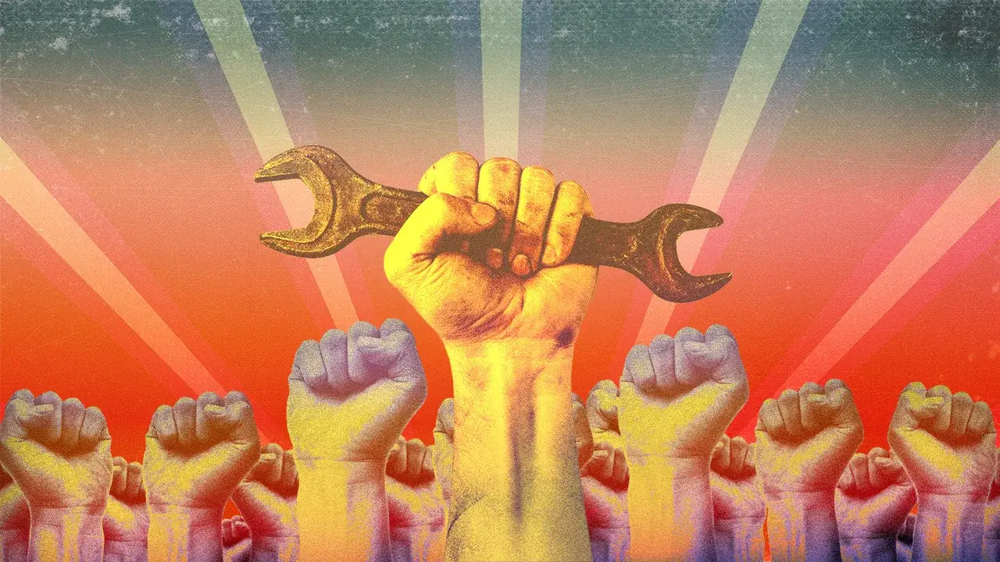
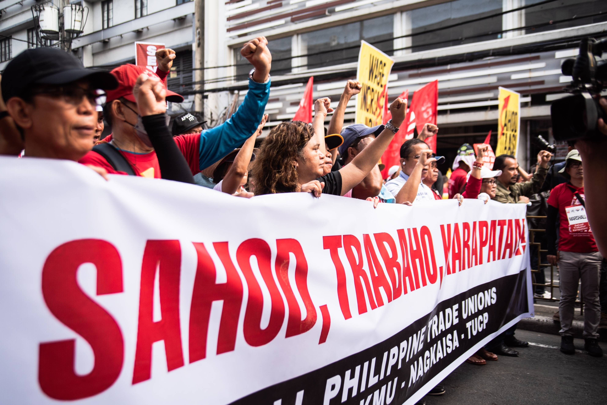

National Labor DayMay 1 |
|
|  | |
|
Every year, Filipinos have regularly celebrated Labor Day, to honor and acknowledge the never-ending contributions of Filipino workers on the developmemnt of the society. Labor Day, also referred to as "Araw ng Paggawa", also serves as the time where wokers unite in a collective effort to voice out their concerns and protest for any injustices they experienced, as well as advocating for change. |
This special day ensures that all workers, regardless of the sector they work for, are treated fairly - following the Executive Order No. 262, series of 1987. Labor Day, or every May 1st, is a regular holiday as embodied in Presidential Proclamation No. 555, series of 2018. Over the years, Labor Day has evolved into a significant occasion for workers’ rights advocacy and solidarity movements across the Philippines. |
|  |
The establishment of Union Obrero Democratico de Filipinas, which was previously referred to as Union Obrera Democratica, marks the history of Labor Day in the Philippines dating from February 2, 1902 by Isabelo delos Reyes and Herminigildo Cruz. During the American occupation area, this union greatly emphasized every Filipino's rights in working class. The first Labor Day celebration was held on May 1, 1903 attended by more than 100,000 employees which was organized by U.O.D.F. The workers have celebrated by protesting and demanding fair wages and righteous working conditions. This event was marked as one of the first protests on the streets of Manila. |